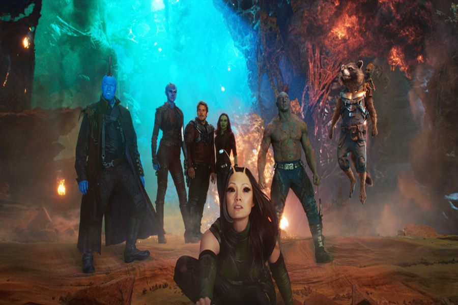
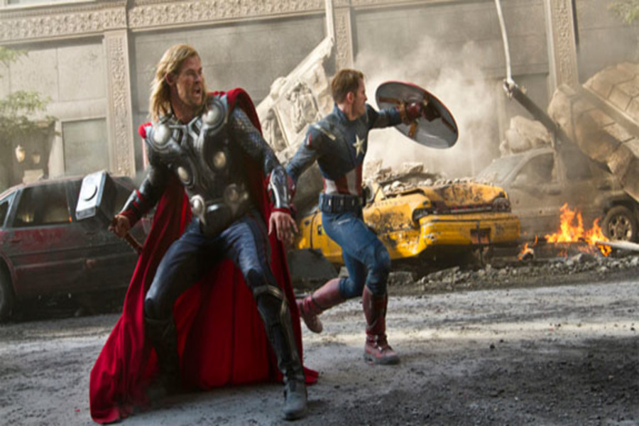
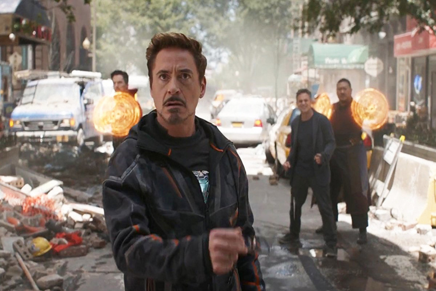
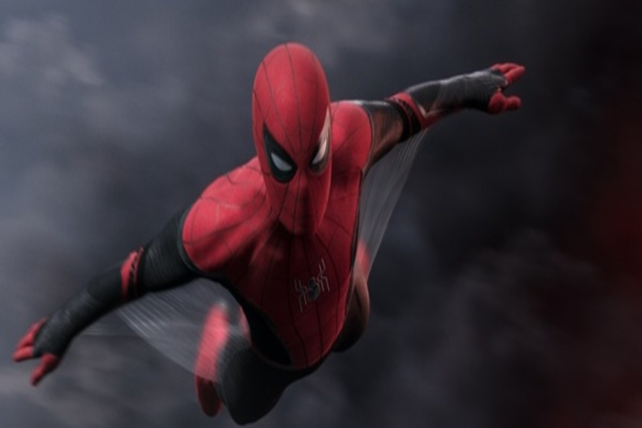
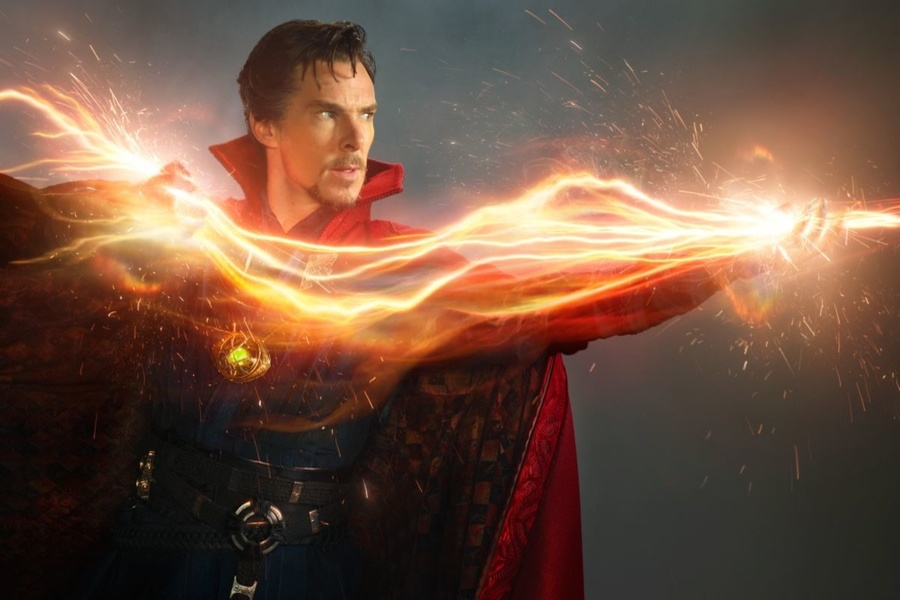
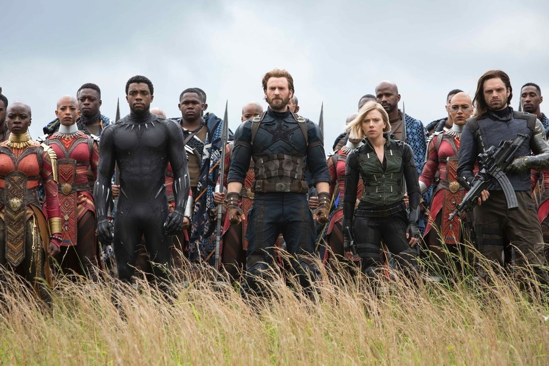
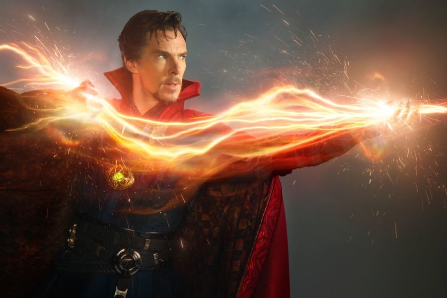
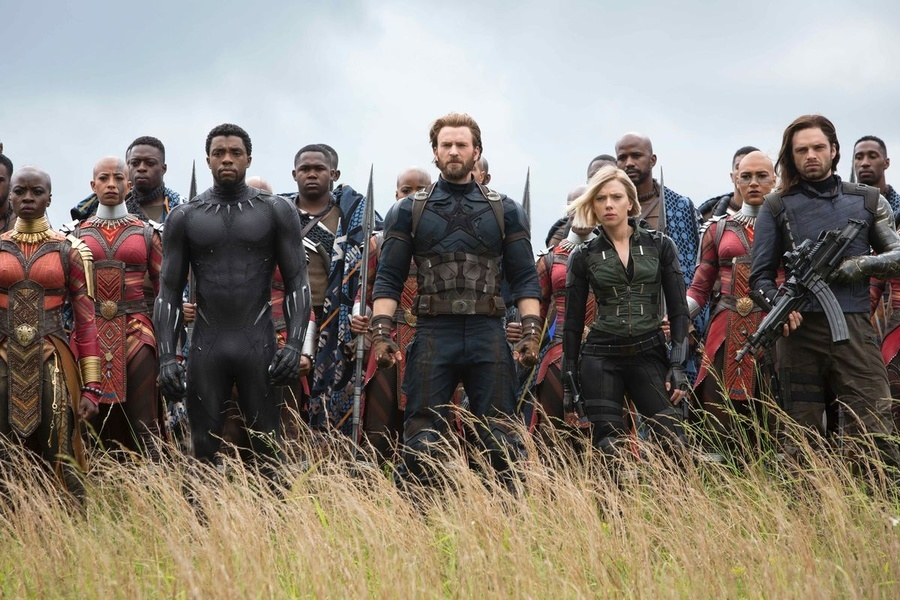
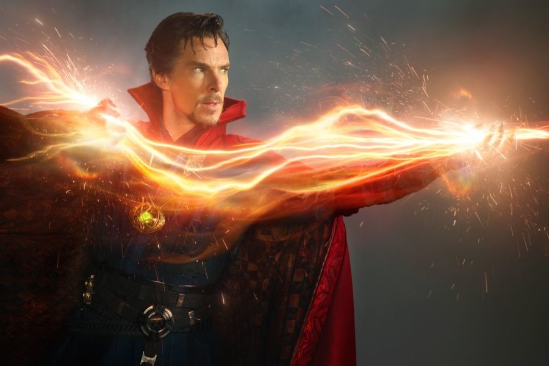
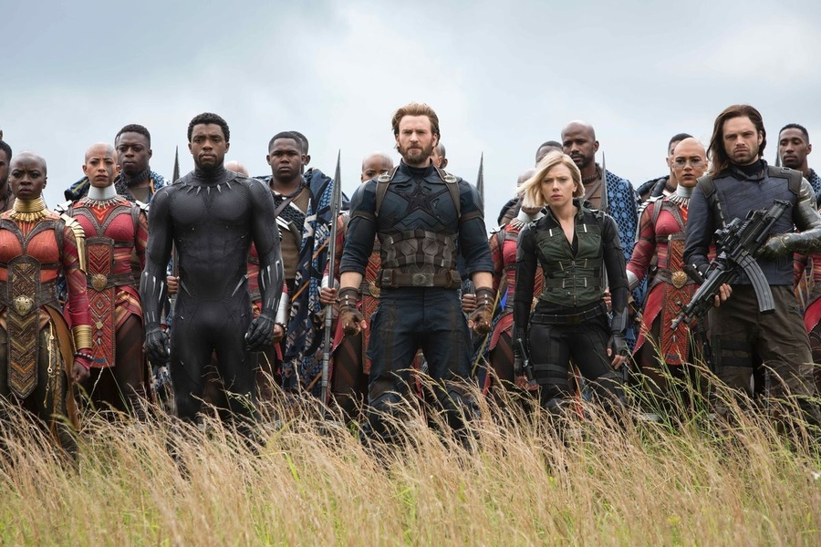

О вселенной
«Кинематографическая вселенная Marvel» - вымышленная
вселенная, американская
медиафраншиза,
серия фильмов о супергероях, основанная на комиксах компании Marvel и разработанная
кинокомпанией
Marvel
Studios. Вселенная была создана путём соединения в общую сюжетную линию нескольких фильмов и
сериалов с
общими актёрами, персонажами и событиями.
На данный момент вышло двадцать три фильма. Фильмы «Железный человек» (2008), «Невероятный Халк»
(2008),
«Железный человек 2» (2010), «Тор» (2011), «Первый мститель» (2011) и «Мстители» (2012)
объединены в
первую фазу. Фильмы «Железный человек 3» (2013), «Тор 2: Царство тьмы» (2013), «Первый мститель:
Другая
война» (2014), «Стражи Галактики» (2014), «Мстители: Эра Альтрона» (2015) и «Человек-муравей»
(2015)
во
вторую. «Первый мститель: Противостояние» (2016), «Доктор Стрэндж» (2016), «Стражи Галактики.
Часть
2»
(2017), «Человек-паук: Возвращение домой» (2017), «Тор: Рагнарёк» (2017), «Чёрная пантера»
(2018),
«Мстители: Война бесконечности» (2018), «Человек-муравей и Оса» (2018), «Капитан Марвел» (2019),
«Мстители: Финал» (2019) и «Человек-паук: Вдали от дома» (2019) в третью. Первые три фазы в свою
очередь
объединены в сюжетную арку «Сага Бесконечности». На 5 ноября 2020 года запланирована премьера
фильма
«Чёрная вдова», который начнёт четвёртую фазу и новую сюжетную арку.
Телесериалы «Агенты Щ.И.Т.» (2013 — наст. время), «Агент Картер» (2015—2016), «Сорвиголова» (2015—2018), «Джессика Джонс» (2015—2019), «Люк Кейдж» (2016—2018), «Железный кулак» (2017—2018), «Защитники» (2017), «Сверхлюди» (2017), «Каратель» (2017—2019), «Беглецы» (2017—2019), «Плащ и Кинжал» (2018—2019) и серия короткометражных фильмов «Marvel One-Shots» также являются частью этой вселенной. Но напрямую с событиями фильмов киновселенной будут связаны только телесериалы Marvel Studios на сервисе потокового вещания Disney+, премьера первого из которых — «Сокол и Зимний солдат» — состоится в августе 2020 года.
Кинематографическая вселенная Marvel занимает первое место в списке самых прибыльных серий фильмов с общими сборами более $22,5 млрд, а картины «Мстители: Финал», «Мстители: Война бесконечности» и «Мстители» занимают первое, пятое, и восьмое места в списке самых кассовых фильмов за всю историю кинематографа.
Телесериалы «Агенты Щ.И.Т.» (2013 — наст. время), «Агент Картер» (2015—2016), «Сорвиголова» (2015—2018), «Джессика Джонс» (2015—2019), «Люк Кейдж» (2016—2018), «Железный кулак» (2017—2018), «Защитники» (2017), «Сверхлюди» (2017), «Каратель» (2017—2019), «Беглецы» (2017—2019), «Плащ и Кинжал» (2018—2019) и серия короткометражных фильмов «Marvel One-Shots» также являются частью этой вселенной. Но напрямую с событиями фильмов киновселенной будут связаны только телесериалы Marvel Studios на сервисе потокового вещания Disney+, премьера первого из которых — «Сокол и Зимний солдат» — состоится в августе 2020 года.
Кинематографическая вселенная Marvel занимает первое место в списке самых прибыльных серий фильмов с общими сборами более $22,5 млрд, а картины «Мстители: Финал», «Мстители: Война бесконечности» и «Мстители» занимают первое, пятое, и восьмое места в списке самых кассовых фильмов за всю историю кинематографа.
Кадры из фильмов




 




